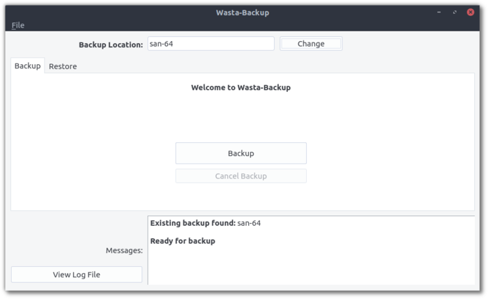

Wasta-Backup: Simple Version-Backup Program
What is it?
Wasta-Backup is a simple Linux backup program for version-backups of data to an external USB device. In other words, it is an easy way to back up important files, and it keeps older versions of the files in case they are needed again.
If you want to know more, Wasta-Backup is a simple graphical interface for rdiff-backup, which is a solid, reputable, and reliable command-line-only backup program. Other rdiff-backup wrappers (like jbackpack) are able to restore from wasta-backup as well - in case our simplistic interface is too limiting.
How does it work?
Here is a screenshot of Wasta-Backup:

If you insert a USB device and start Wasta-Backup, the device will automatically be found and you just need to click Backup to begin.
When a USB device with a wasta-backup folder on it (presumably from a previous backup) is inserted, Wasta-Backup will auto-launch.
What gets backed up, exactly?
Here is the list of default folders that are backed up with Wasta-Backup (note that ~ represents a user’s home folder):
- Adapt It:
~/Adapt It Unicode Work - Bloom:
~/Bloom - Fieldworks:
~/.local/share/fieldworks/Projects - Paratext9:
~/Paratext9Projects - Paratext8:
~/Paratext8Projects - Publications:
~/Publications - Thunderbird:
~/.thunderbird - WeSay:
~/WeSay - User Documents:
~/Documents - User Desktop:
~/Desktop
By default, Wasta-Backup will only backup important files within the Documents and Desktop folders (files with other extensions like movies and pictures will not be backed up). This is done to make sure the USB backup device is not filled up too quickly.
How do I customize the configuration of Wasta-Backup?
Wasta-Backup can be customized to meet almost anyone’s backup needs. The following configuration files are used by Wasta-Backup:
-
backupDirs.txt: specifies which folders to backup and other parameters such as if
backupInclude.txtshould be used and the number of backup versions to keep -
backupInclude.txt: specifies which file extensions to backup, so files with media extensions, for example, will not be backed up (to save space on the backup device)
The above default configuration files are stored in a user’s ~/.config/wasta-backup/ folder and will be used for new backup devices.
After a backup device is used, it stores the configuration files. This allows each backup device to have its own configuration settings to allow for different storage capacities.
Again to be very clear, once a backup location has been used for Wasta-Backup, the default configuration files in a user’s ~/.config/wasta-backup/ are not used: the configuration files from the backup location are used instead.
What can I restore?
Wasta-Backup can restore:
- A previous version of a file or folder (the current item is first renamed using the current date and time)
- A deleted file or folder
- All current files and folders (such as when you are moving files from an old computer to a new computer)
How do I install Wasta-Backup?
Wasta-Backup is pre-installed in Wasta-Linux. For other Ubuntu-based Linux distributions (Ubuntu, Linux Mint, Pop!_OS, Zorin OS, elementary, etc), the easiest way to install Wasta-Backup is to use a Terminal *. Copy each of these three commands and enter them in the Terminal (one at a time; you will need to provide an administrative password):
sudo add-apt-repository ppa:wasta-linux/wasta-apps
sudo apt-get update
sudo apt-get install wasta-backup
* To open the Terminal, in Wasta-Linux go to Menu > Administration > Terminal, or press the following keys at the same time: Ctrl + Alt + T